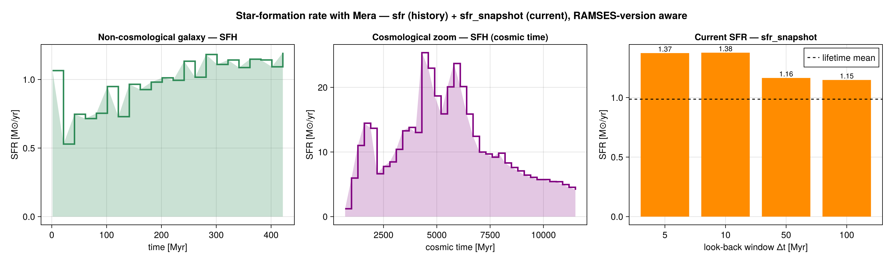

Star-Formation Rate
This page is also an executable Jupyter notebook — open / download sfr.ipynb. The notebooks run end-to-end and double as part of Mera's test suite.
Mera measures star formation directly from the star particles, in two complementary ways:
sfr— the star-formation history SFR(t): stellar mass formed per time bin, in M⊙/yr.sfr_snapshot— the current SFR from a single snapshot: the mass formed within recent look-back windows (the observational "current SFR", e.g. Hα ≈ 5–10 Myr, FUV ≈ 100 Myr), plus the lifetime-averaged rate.
Both are RAMSES-version aware. Star particles are selected by the universal sentinel birth ≠ 0 (non-star particles store birth == 0); a birth > 0 test is not reliable because the sign and scale of the stored birth time vary between runs. The formation-time axis is always physical:
- non-cosmological runs use the proper birth time (the run's own time coordinate);
- cosmological runs convert the RAMSES super-conformal birth time to the physical cosmic time of formation via the Friedmann table (see
stellar_age/cosmology) — the raw:birthis negative and not a physical time, so it must not be binned directly.

Star-formation history
using Mera
info = getinfo(300, "/sim/mw")
parts = getparticles(info)
t, s = sfr(parts; tbinsize=20.0) # t = left bin edges [Myr], s = SFR [M⊙/yr]tbinsize— bin width in Myr.trange = [t0, t1]in Myr — each entry defaults tomissing, meaning the earliest / latest stellar formation time, so the bins span exactly the star-formation history. Pass explicit values to crop or to fix a common axis across snapshots.mass— the mass field to integrate.:auto(default) prefers a stored initial-mass column (:minit,:mass_init, …, auto-detected) and falls back to the current:mass. SFR should use the initial stellar mass; the current mass underestimates it through post-formation mass loss. Pass e.g.mass = :minitto force a field.mask— aBoolvector over the particles to subselect (e.g. a spatial region, or one stellar population). Combine withgetvar/region selections.mode—:none(M⊙/yr) or:probability(normalised SFH fraction).
The integral of the history recovers the total stellar mass formed: sum(s) * tbinsize * 1e6 ≈ Σ stellar mass (M⊙).
Cosmological runs
No change in the call — the physical cosmic formation time is used automatically:
info = getinfo(80, "/sim/cosmo") # a cosmological run
parts = getparticles(info)
t, s = sfr(parts; tbinsize=300.0) # t = cosmic time [Myr]; stars selected by birth ≠ 0Current SFR from one snapshot
s = sfr_snapshot(parts) # default look-back windows [5, 10, 100] Myr + lifetime mean
s.sfr # [SFR(5 Myr), SFR(10 Myr), SFR(100 Myr)] M⊙/yr
s.sfr_mean # total stellar mass / age of the oldest star M⊙/yr
s.n_stars, s.stellar_mass_Msol # star count and total stellar mass
s.mass_field # which mass field was used (e.g. :minit or :mass)
s = sfr_snapshot(parts; windows=[5.0, 10.0, 50.0, 100.0]) # custom windowsFor each window Δt, SFR(Δt) = M⋆(age ≤ Δt) / Δt, where ages are computed correctly for both non-cosmological and cosmological runs (the latter via the Friedmann-table stellar_age).
SN mass-loss correction
The SFR should integrate the stars' initial (birth) mass; the current :mass is reduced by post-formation stellar mass loss. sfr/sfr_snapshot use a stored initial-mass column automatically when present. When a run stores only the current mass, pass eta_sn to reconstruct the birth mass — a star older than t_sn_delay Myr (SN onset, default 5) has shed a fraction eta_sn, so it is rescaled by 1/(1-eta_sn):
t, s = sfr(parts; eta_sn=0.2) # 20% SN mass loss → birth-mass-based SFReta_sn=0 (default) is a no-op, and it is ignored (with a warning) when an initial-mass field is already used — that column is already the birth mass.
Depletion time & star-formation efficiency
depletion_time combines a gas region with an SFR estimate to return the gas depletion time t_depl = M_gas/SFR, the mass-weighted free-fall time ⟨t_ff⟩, and the efficiency per free-fall time ε_ff = SFR·⟨t_ff⟩/M_gas (Krumholz–McKee). Mask to the star-forming gas to measure its efficiency:
d = depletion_time(gas, 1.5; mask = getvar(gas,:rho,:nH) .> 27) # SFR = 1.5 M⊙/yr
d.t_depl_Gyr, d.t_ff_mw_Myr, d.eps_ffThe per-cell free-fall time itself is the getvar field :freefall_time (= √(3π/32Gρ), correct in any time unit: getvar(gas, :freefall_time, :Myr)).
API
sfr and sfr_snapshot are documented in the API reference. The report system's SFRCard wraps sfr to drop a star-formation panel into a composed report. See also stellar_age and cosmology for the cosmological time conversions.